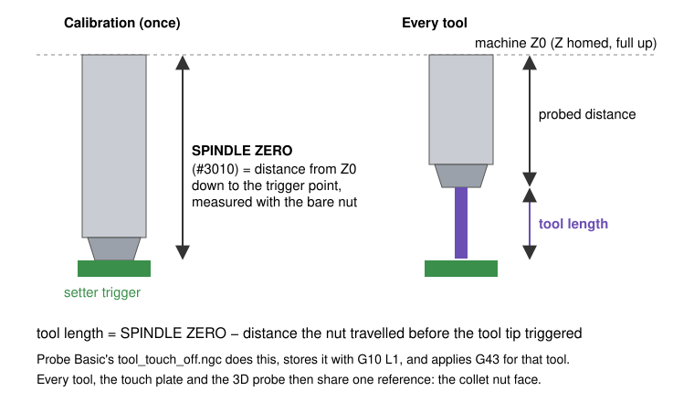
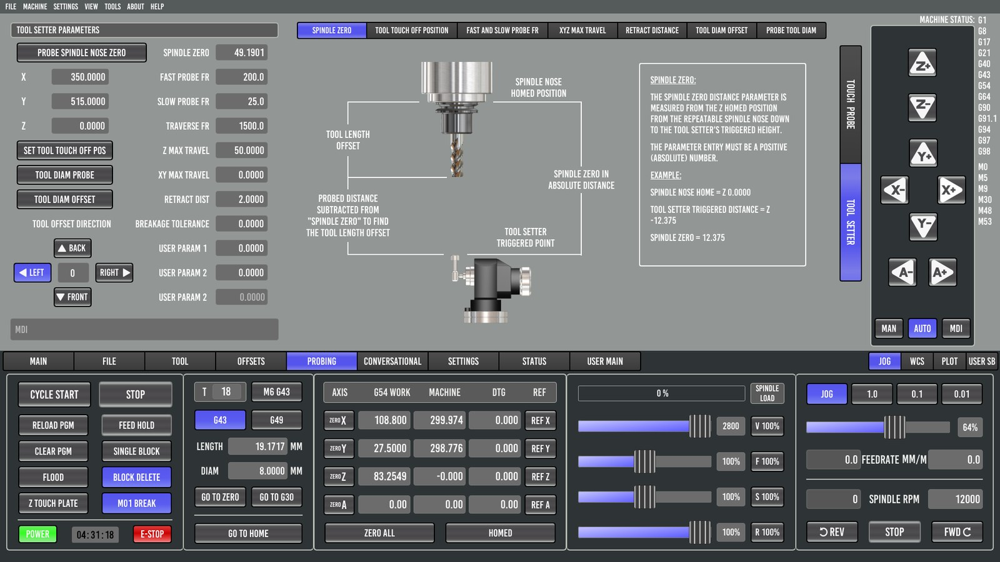

6. The tool setter, and measuring every tool automatically
A tool setter is a switch at a fixed spot on the table. Lowering a cutter onto it tells LinuxCNC exactly how far that cutter's tip sits below the spindle reference, which is its tool length. With one, tool changes stop being a source of depth errors.

One-time setup (PROBING → TOOL SETTER)

1. Wire it to the probe input
LinuxCNC has one probe input (motion.probe-input). If you have a 3D probe, a touch plate and a setter, OR them together in HAL so any of them triggers probing. On the reference machine the setter is normally-closed, so its input is inverted (input-06-not) before the OR. See config/6040_7i96s/hallib/6040_7i96s.hal.
2. Set the touch-off position (G30)
- Jog the spindle so its centerline is over the middle of the setter's button.
- Raise Z to the top (machine Z0).
- Press SET TOOL TOUCH OFF POS.
This stores the position as G30 (parameters #5181–#5183). GO TO G30 returns there.
3. Set SPINDLE ZERO (#3010)
SPINDLE ZERO is the distance from machine Z0 down to the setter's trigger point, measured with the reference surface: the bare collet nut, or whatever you call "length zero". Probe Basic's own help text says it must be entered as a positive number.
- The direct way: with no tool in the spindle (nut only), jog down slowly until the setter triggers, and enter the distance travelled.
- PROBE SPINDLE NOSE ZERO automates this if your spindle nose can safely press the setter.
On the 6040. SPINDLE ZERO was first worked out from a caliper measurement of a tool's stick-out. That turned out to be 0.565 mm off, because measuring stick-out by caliper is harder than it looks. Measuring with the bare nut (49.1901 mm) fixed it, and every stored tool length and the G54 Z were shifted together by the same amount. Lesson: calibrate the reference directly. Don't derive it from a measured tool.
4. Feeds and distances
| Setting | # | Meaning |
|---|---|---|
| Fast probe FR | 3004 | First touch. Slow enough that the overshoot after triggering doesn't hurt the setter. |
| Slow probe FR | 3005 | Measuring touch. 0 skips it. |
| Traverse FR | 3006 | Moves to and from the setter. |
| Z max travel | 3007 | How far down it searches before failing. Must reach your shortest tool. |
| XY max travel | 3008 | For diameter probing. |
| Retract dist | 3009 | Back-off between the two touches. |
| TOOL DIAM OFFSET + direction | 3012/3013 | Offsets large tools (face mills) by their radius so the edge, not the empty center, lands on the button. |
Measuring a tool by hand
Load the tool (T box + M6 G43, or T5 M6 in MDI), then press TOUCH OFF CURRENT TOOL on the TOOL tab. The machine:
- lifts to machine Z0 and moves to the G30 position,
- probes down fast, retracts, probes slowly,
- lifts back to Z0,
- stores the length in the tool table, and applies G43 for that tool.
Repeatability on the reference machine: about 0.007 mm.
Measuring at every tool change (M6 remap)
By default, M6 in LinuxCNC only asks you to change the tool; it doesn't measure it. Unless you measured each tool beforehand, a program would then run with whatever length is in the table. Changing what M6 does is called a remap. This one makes every tool change, from a program, MDI or the M6 G43 button, measure the new tool.
The subroutine, subroutines/pb_m6_touchoff.ngc:
o<pb_m6_touchoff> sub
M5 (spindle off before anything moves to the setter)
M6 (built-in manual change: Z up, insert-tool prompt)
M66 E0 L0 (stop read-ahead so the new tool is current)
o100 if [#<_task> EQ 1]
o110 if [[#<selected_tool> GT 0] AND [#<selected_tool> NE #3014]]
o<tool_touch_off> call
o110 endif
o100 endif
o<pb_m6_touchoff> endsub [1]
M2
And in the INI:
[RS274NGC]
REMAP = M6 modalgroup=6 prolog=change_prolog ngc=pb_m6_touchoff epilog=change_epilog
[PYTHON]
PATH_PREPEND = python
TOPLEVEL = python/toplevel.py
The python/ folder holds LinuxCNC's standard remap glue (toplevel.py → remap.py → stdglue.py). Probe Basic's sample configs already include it.
Details that matter:
- Inside a remap subroutine,
M6means the built-in tool change. It doesn't call itself. #<_task> EQ 1is true only when the program really runs. The preview interpreter has_task = 0. Without this guard, the preview tries to "probe", the probe never triggers, and the preview stops after a few lines.- The probe tool is skipped, so the setter never presses the probe's stylus. T0 (empty spindle) is skipped too.
endsub [1]: the standard epilog requires the remap to return a value.- Comments can't contain parentheses.
(T99 (probe))is an error in G-code. The interpreter stops with "nested comment".
After enabling it, a Fusion 360 program with plain T5 M6 lines measures every tool with no edits. See chapter 10.